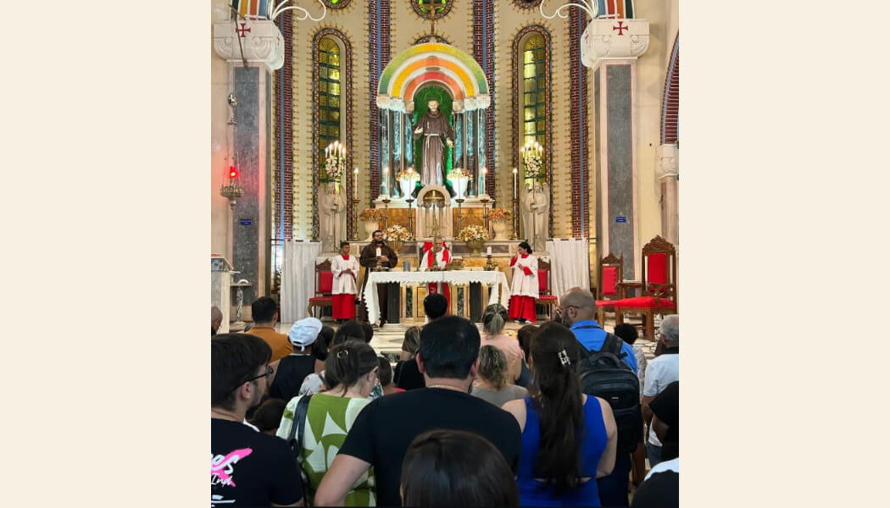
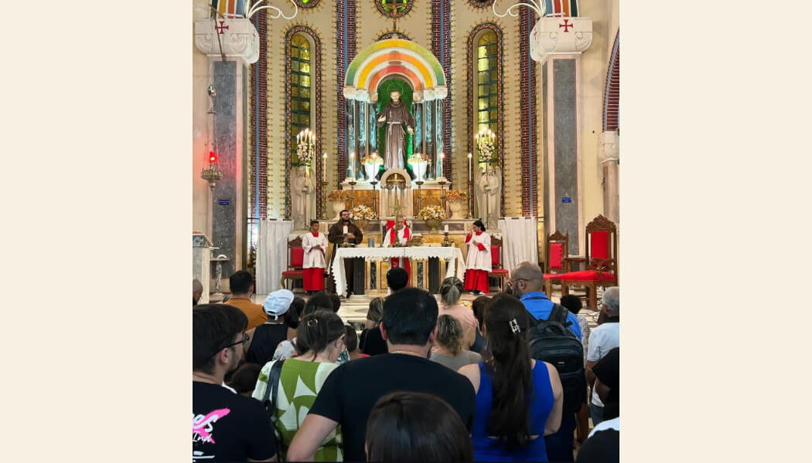
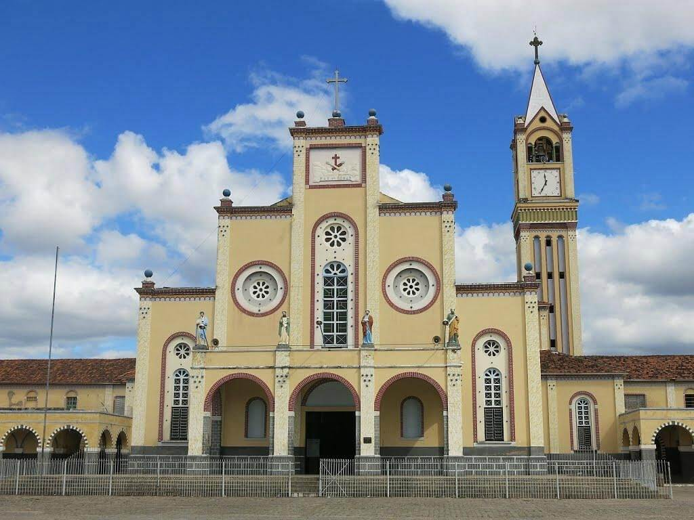
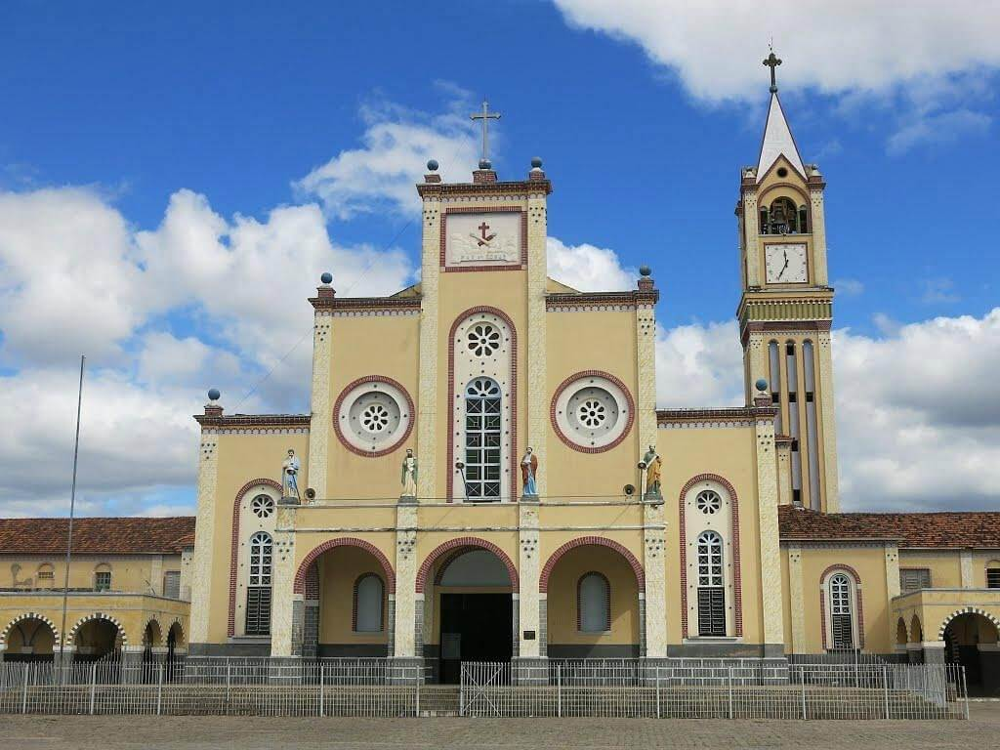

Santuário São Francisco das Chagas
O Santuário de São Francisco das Chagas, conhecido como a Igreja dos Franciscanos, foi benzido em 6 de janeiro de 1956, após seis anos da inauguração de sua pedra fundamental, em 6 de janeiro de 1950.
Fica localizado na Praça Monsenhor Joviniano Barreto e é um dos maiores templos dessa ordem no Brasil. O Santuário de São Francisco das Chagas também é sede da Paróquia do mesmo nome, confiada aos Frades Capuchinhos.
Seu teto possui citações de nomes de famílias que contribuíram de alguma maneira para a obra, que foi erguida em estilo lombardo-saxônico e na forma de Cruz Latina Dupla.
A imagem de São Francisco no altar-mor foi esculpida em Gênova, na Itália, e outra em um enorme pedestal é circundada pela Praça das Almas, que são passarelas suspensas como réplica à Praça de São Pedro no Vaticano. Sua torre de 45 metros de altura conta com um relógio e mais oito sinos que tocam trechos do Hino a São Francisco. O estilo do Santuário é o Romano Lombardo.
O Santuário de São Francisco das Chagas comporta cerca de 30 mil pessoas em época de romaria.

 

 
